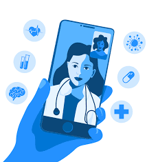
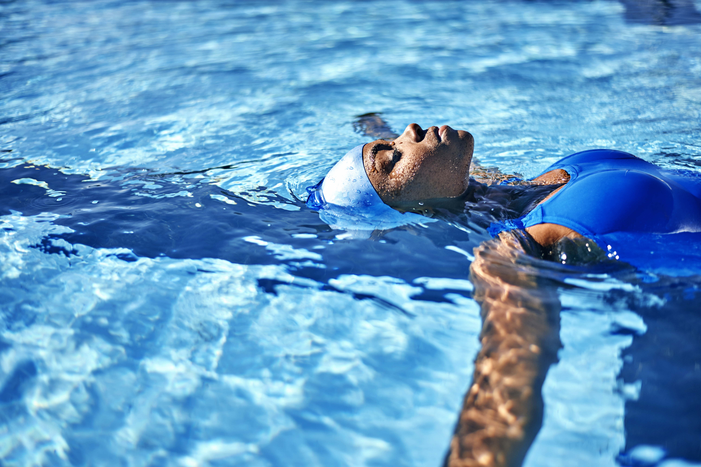

The new year is finally here. We've all seen and received lists of ways to make 2022 better than last year, but we think this list will offers some brilliant and thoughtful suggestions and personal challenges for the new year. Keeping a gratitude journal is not on our list. Keep reading - you'll see.
1. Start now and Enjoy the Outdoors. The Twindemic season - COVID-19 (including variants) and flu season- will collide this winter but consider the National Parks as one way to get outdoors and still be safe. You can be assured that public health measures are in place across the National Park System, including capacity limits, entrance reservations, one-way trails, and/or temporary closures. Check with individual park websites or download the NPS App for specific details about their operations.
2. Stay Indoors and Learn a New Language: Step 1) Peruse this site for some fun travel magazines; Step 2) Spend some time being swept away with ideas for travel when you are ready or when current public health concerns are better managed; Step 3) If necessary, learn a new language on your own through Babbel, Duolingo, or check out this list of 9 Places to Learn a New Language Online for Free. In a few months, write @advancingherhealth to share where you allowed your mind to soar.
3. Make your medical appointments and keep them. Yea Yea, we know it is the right thing to do, but… Since the onset of the COVID-19 pandemic hundreds of thousands of medical appointments have been cancelled, missed, and put off until a time when “things get better”. For those reasons health outcomes are likely to slip and conditions that could be identified early in development could progress to much more serious cases. If it is offered, consider telehealth, to stay in touch with your health care provider. When was the last time that you had your provider’s face to face, eye to eye attention and felt like you were being seen, heard, and understood? Telehealth does not require you to strip down, wear a poorly fitting gown, sit on the edge of a paper-covered examining table, feeling vulnerable and exposed. You can provide your provider with a journal of blood pressure, blood glucose, and body weight measurements if you are tracking chronic conditions like hypertension, type 2 diabetes, or overweight/obesity issues and telehealth can be ideal for mental health consultations. You can discuss symptoms, the effectiveness and side effects of medications and more. Learn more about the availability and effective uses of telehealth HERE – and keep that appointment.

4. Consider Therapy. It finally feels like the stigma long associated with seeking support for mental wellbeing is fading and soon, well in the frame of our rear view mirror. This might be due to the wide-spread onset of fear, anxiety, depression, and other mental health concerns as we try to “hold it together” while the world around us is spinning out of our control. Today there are many options for support, online using a virtual meeting platform, via smart device app, walk and talk therapy now moved to outdoor spaces like parks to observe social distancing, and of course the traditional in office consults. Visit Mental Health America to learn how to Find Help: When To Get It And Where To Go.
5. Wiggle Your Heart and Change Your Mood with Music. According to Northshore.org – a teaching affiliate of the University of Chicago Pritzker School of Medicine, when music is played, blood flows more easily. We boost dopamine production in our brain (which relieves the feelings of anxiety and depression), and so many other benefits.
Fall in love with these 15 Places To Listen to Free Music Online that has something for everyone.
6. Learn to Do-It-Yourself. You may have seen remodeling hacks on social media like how to transform a worn-out coffee table into something to showcase in your living room. Perhaps, these folks started out with free online classes like those available at a big box store or on YouTube. For you wanna-be (and shall be) do-it-yourselfers, Home Depot has a host of online classes for people like you that want to empower themselves to complete home projects before going in search of help. Their library includes activities with the kids, indoor and outdoor home décor, and so much more – and most are available on your smartphone or desktop. Come on, check them out and write us (including pics if you have them) of your latest masterpiece.
7. Ask for help - You simply cannot do it all alone. Filing back taxes, taking care of yard work, shuttling children between activities, even grocery shopping when things are chaotic. There is no harm in asking for help and it doesn't make you any less of a woman or person for admitting that you need support. In an article in The Verge, Psychologist Heidi Grant says that, We wildly underestimate how likely people are to help and explains why it is so hard to ask for help. She is also the author of the Harvard Business Review article, How to Get People to Help You. Try it, and you will soon see that your ask for support is not as unique, embarrassing, or as belittling as you thought and you'll find satisfaction and comfort in finally getting that thing, whatever it is, done.

8. Learn to Swim Again or for the First Time. According to the American Red Cross, close to 55% of Americans cannot swim to save their lives. Only roughly 33% of African Americans can perform all five basic swimming skills compared to 51% of whites. Learn to swim. Get comfortable enough to enjoy the “lightness of being”, unafraid of being overtaken by the wet wonder of smooth waves and currents lapping around you. Swimming or aqua classes like Zumba, Deep Water, and Aqua Fit can offer fantastic aerobic exercise and a calming of anxieties as you manipulate your way through the water or just let the water move you at its pace. The American Red Cross offers Adult Swim Lessons in their learn-at-your-own-pace Learn-to-Swim program. Visit the site and find a program near you.
9. Choose Optimism. “Trouble don’t last always” is a common paraphrase of several actual verses in the Holy Bible that encourages looking for the light of something better to come. Trouble don’t last always unless you insist on wallowing in negative thoughts, overdosing on the negativity that cable news delivers with glee, focus on problems and not your ability to find solutions, being a sourpuss and hanging out with people that cosign your “sourpussness”. Check out Depak Chopra’s Eight Ways to Choose Optimism over Pessimism in a blog written by Karson McGinley.
10. Give. You’ve heard the saying that it’s better to give than to receive. Consider giving thought about supporting an organization (yes, like @advancingherhealth) whose work fall in line with your interest and desire to make a difference. According to the Cleveland Clinic, “studies show that giving can actually boost your physical and mental health, which is good news given the number of people that are suffering from the emotional complications of a global pandemic”. Here are more health benefits from giving: lowers blood pressure and stress levels, gain greater happiness and satisfaction, and reduces isolation. Added bonus - finding a habit that you enjoy is also found to reduce stress - check out this link to learn more.
Published January 1 2022.
This article first appeared on the IAWH Health blog on December 29, 2021 and is preserved here as part of the IAWH Health Journal archive. Information reflects what was known at the time of publication. This article is for general education and is not medical advice.